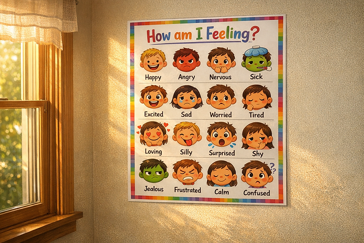

Emotional regulation is a vital skill for children, especially those with ADHD. As a parent, I understand the challenges of guiding our kids through their feelings. Adding ADHD to the mix makes the challenge that much more daunting. Not only because of the potential for meltdowns, but also because we simply remember what it was like to feel all those feelings so intensely. It’s not just about helping them manage emotions; it’s about giving them the tools to thrive in daily life. In this post, I’ll share practical strategies and insights to teach children emotional regulation, making it easier for both you and your child.
Understanding Emotional Regulation
Emotional regulation means managing and responding to feelings in a healthy way. For children with ADHD, this process can be particularly challenging. They might experience intense emotions and struggle to control their reactions. Understanding emotional regulation is the first step to helping kids learn how to manage their feelings effectively.
Emotional regulation isn't just about calming down when upset. It involves recognizing emotions, understanding triggers, and developing coping strategies. For example, studies show that children with ADHD often have higher rates of emotional dysregulation. Teaching them to recognize their feelings can help prevent impulsive reactions.
The Importance of Emotional Regulation for ADHD Children
Teaching emotional regulation is essential for children with ADHD for a few key reasons:
- Better Social Skills: Children who manage their emotions are more likely to interact positively with peers and adults. A study found that kids with good emotional regulation reported better friendships and social interactions.
- Enhanced Academic Performance: Emotionally regulated children can focus better on tasks and handle frustration, which is crucial in school settings. Research shows that students who can manage their feelings tend to achieve higher grades.
- Overall Mental Health: Learning to manage emotions can reduce anxiety and depression. According to the CDC, children with strong emotional skills are less likely to experience mental health issues later in life.
Recognizing Emotions
The first step in teaching emotional regulation is helping children recognize their emotions. This can be done with various activities and discussions. One effective method is using emotion charts or cards that depict different feelings.
For example, when your child shows anger, ask them to point to the corresponding emotion on the chart. This practice helps them identify feelings and encourages verbal expression. A study published in the Journal of Child Psychology found that children who identified their emotions were less prone to outbursts.
Teaching Coping Strategies
Once children can recognize their emotions, the next step is teaching coping strategies that fit their preferences and situations. Here are some effective strategies to consider:
- Deep Breathing: Teach your child to take slow, deep breaths when feeling overwhelmed. Data indicates that deep breathing can reduce levels of the stress hormone cortisol by up to 40%.
- Counting: Encourage your child to count to ten before reacting. This brief pause allows them to process their feelings and respond more thoughtfully.
- Physical Activity: Activities like jumping on a trampoline or cycling can help children release pent-up energy. Research shows that regular exercise can improve mood by increasing serotonin levels.
- Creative Outlets: Encourage your child to express feelings through art or music. Engaging in creative activities can provide a safe space for exploration and self-expression.
Creating a Safe Environment
Creating a supportive environment is crucial for teaching emotional regulation. Children need to feel secure when expressing emotions. Here are some tips for fostering a safe environment:
- Open Communication: Encourage discussions about feelings. Let your child know it’s okay to talk about emotions and assure them that you will listen.
- Model Emotional Regulation: Show your child how you manage your emotions in tough situations. For example, when you're stressed, vocalize your coping strategies, like taking a break or going for a walk.
- Establish Routines: Consistent routines provide stability, helping reduce anxiety. A report by the Stanford Research Institute found that predictable routines can lower children's behavioral issues by up to 30%.
- Positive Reinforcement: Celebrate your child's attempts to regulate emotions. Recognizing their efforts can motivate them to keep practicing these skills.
Using Role-Playing
Children learn best through play. Role-playing can be a fun and effective way to teach emotional regulation. By acting out different scenarios, children can practice recognizing and managing their feelings in a safe space. Here’s how to incorporate role-playing into your teaching:
- Choose Scenarios: Select situations that may trigger strong emotions, such as losing a game or having a disagreement with a friend.
- Act It Out: Take turns acting out these situations. Encourage your child to express feelings and practice coping strategies during the role-play.
- Discuss Outcomes: After each role-play, discuss what worked well and what could be improved. This reflection helps reinforce the lessons learned.
Encouraging Emotional Vocabulary
Building an emotional vocabulary is crucial for helping children articulate their feelings. The more words they have to describe their emotions, the better they can communicate their needs. Here are ways to expand your child’s emotional vocabulary:
- Read Books: Choose books that explore emotions and discuss characters' feelings. Ask your child how they think the characters feel and why, fostering deeper understanding.
- Use Emotion Words: Incorporate diverse emotion words into daily conversations. Instead of just asking if they are happy or sad, introduce words like frustrated, excited, or anxious.
- Create a Feelings Journal: Encourage your child to keep a journal where they can write or draw about their feelings. This practice can help them reflect on their emotions regularly.
Seeking Professional Help
Sometimes, despite our best efforts, children may need additional support to learn emotional regulation. If you notice significant struggles, it may be beneficial to seek professional help. A therapist, counselor, or even an occupational therapist who specializes in ADHD can provide personalized strategies. You should be able to get a referral from your child's pediatrician.
Don't hesitate to reach out for help if you feel overwhelmed. It’s important to remember that you are not alone, and there are resources available to assist you and your child. If you are looking for additional tools, educational materials, and ADHD and autism informed resources, you can explore my curated collection on the ADHD & Autism Resources page.
The Path to Emotional Mastery
Teaching children emotional regulation is a vital skill that can greatly impact their lives, especially for those with ADHD. By helping them recognize feelings, develop coping strategies, and create a supportive environment, we empower our children to manage their emotions more effectively.
Remember, this journey may take time. Celebrate small victories and prioritize self-care as a parent. Together, we can help our children thrive emotionally and socially.
Recommended Reading for Supporting Emotional Regulation
Learning emotional regulation is a journey, and parents do not have to navigate it alone. The right books can offer validation, practical tools, and deeper insight into how children experience emotions. Here are a few highly recommended reads for parents supporting children with ADHD and emotional regulation challenges:
• Why Will No One Play With Me? by Caroline Maguire, M.Ed. This book focuses on social understanding, emotional awareness, and relationship skills. It offers concrete strategies to help children recognize social cues, manage big emotions, and build stronger peer connections.
• Mindful Parenting for ADHD by Mark Bertin, MD This book blends mindfulness with ADHD science, helping parents stay regulated themselves while teaching children emotional awareness, resilience, and self regulation skills in everyday moments.
These resources can complement the strategies shared here and provide additional guidance as you support your child’s emotional growth.